Cheat Sheet和Handout
Cheat sheet的含义
软件领域内的
Cheat sheet和handout的解释
－》Cheat，中文含义为：作弊，Sheet：中文含义为：表格，表单，小纸片
－》cheat sheet，中文含义为：（用于作弊）小抄
－》放在软件行业内，意思是：
就像考试作弊一样，把大量的内容，精简的，有机的排列在一张纸，一张图上
特点：
- 化繁为简
用途：
- 方便随时参考和查阅
- 尤其常见于，把各种软件，工具等的快捷键，主要功能等，总结后列在一张图片内，多数以图文并茂的表格，图表，图片等形式展现
概述：
- 某某（语言，工具等）的Cheat sheet ＝＝ 某某（语言，工具等）快速查阅的图表型的手册
handout的含义
另外的handout，中文本意：讲义；宣传册子，宣传品
－》往往有时候也可以认为：
cheat sheet == handout
Cheat sheet和handout的举例：
Cheat sheet举例
vi的cheat sheet
VI Editor / Linux Terminal Cheat Sheet (PDF) – Smashing Magazine
－》
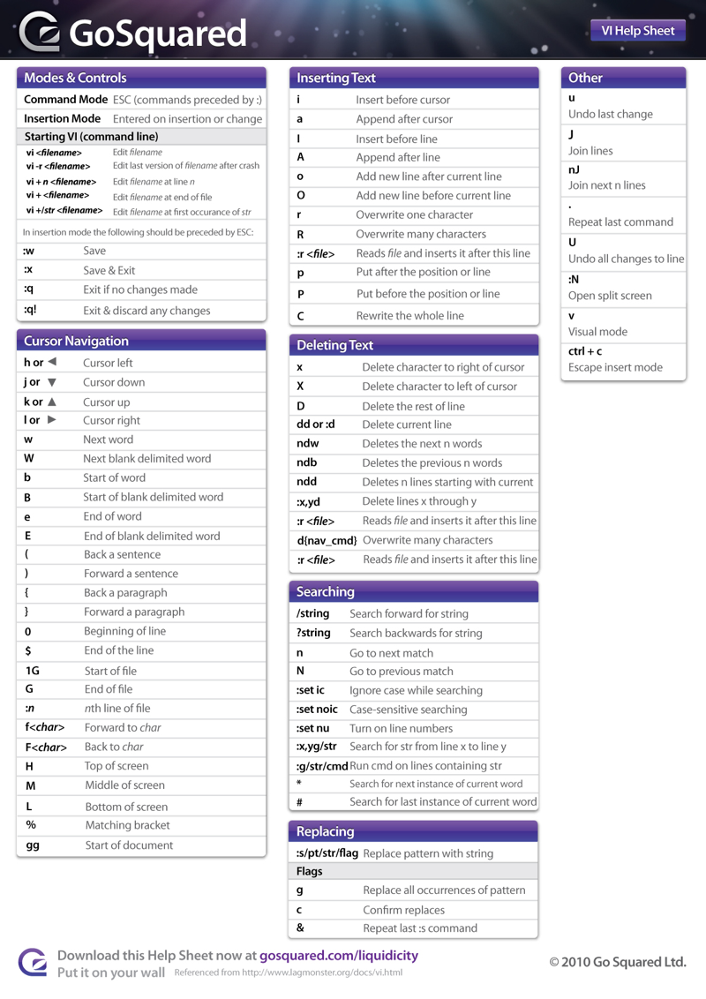
Xcode的快捷键的cheat sheet
http://www.crifan.com/xcode_common_used_keyboard_shortcut
中的：
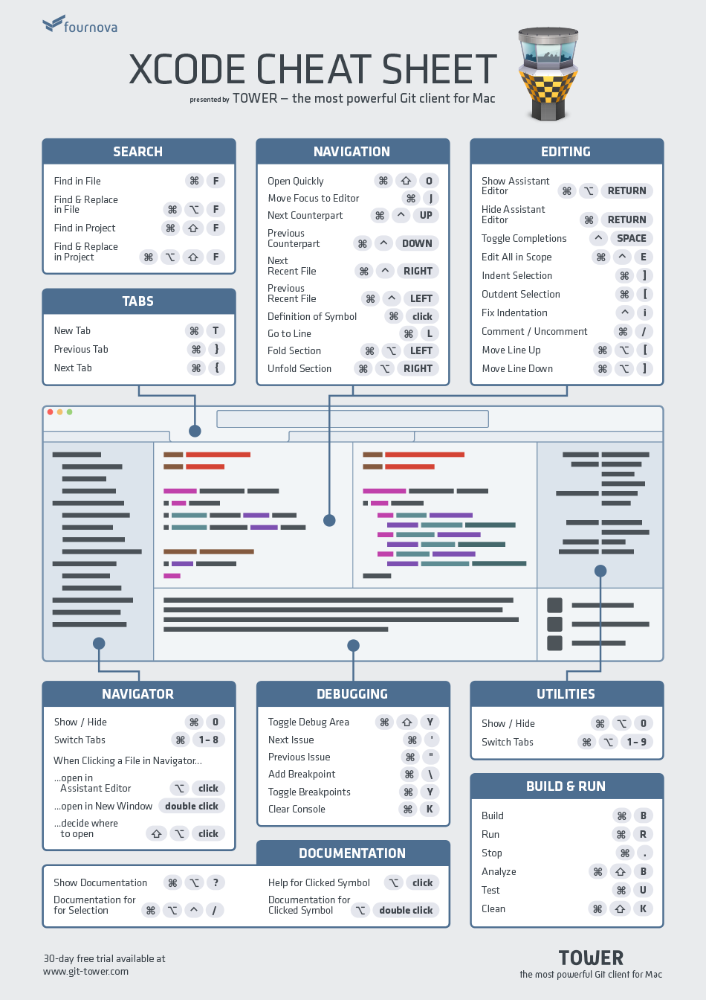
python的cheat sheet
python:cours:mementopython3-english.pdf
Keep This Python Cheat Sheet on Hand When Learning to Code
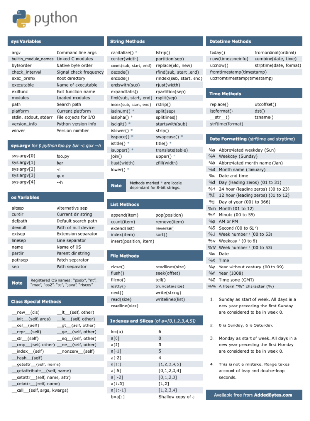
go语言的cheat sheet
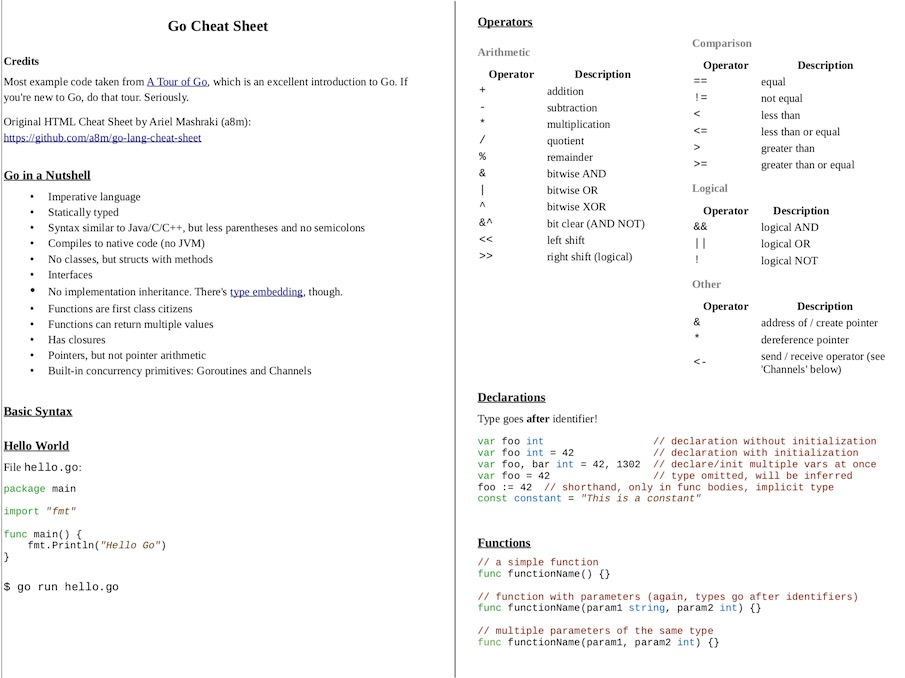 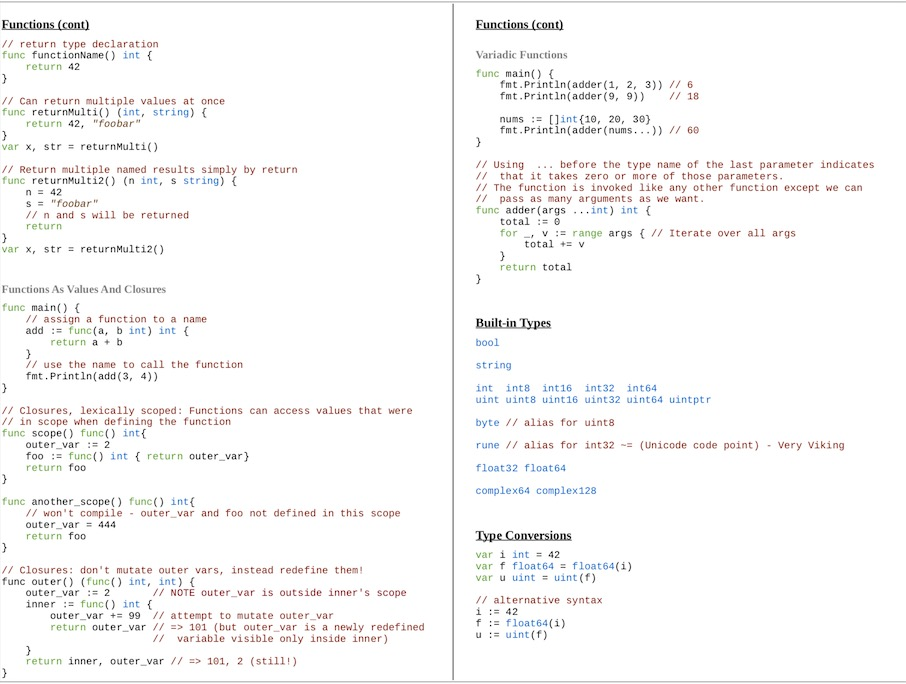 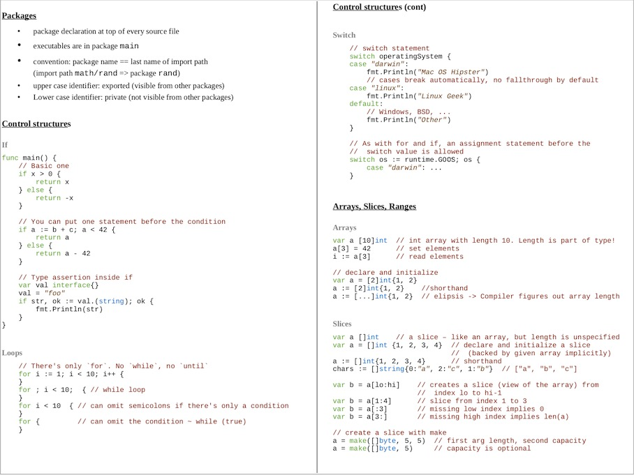 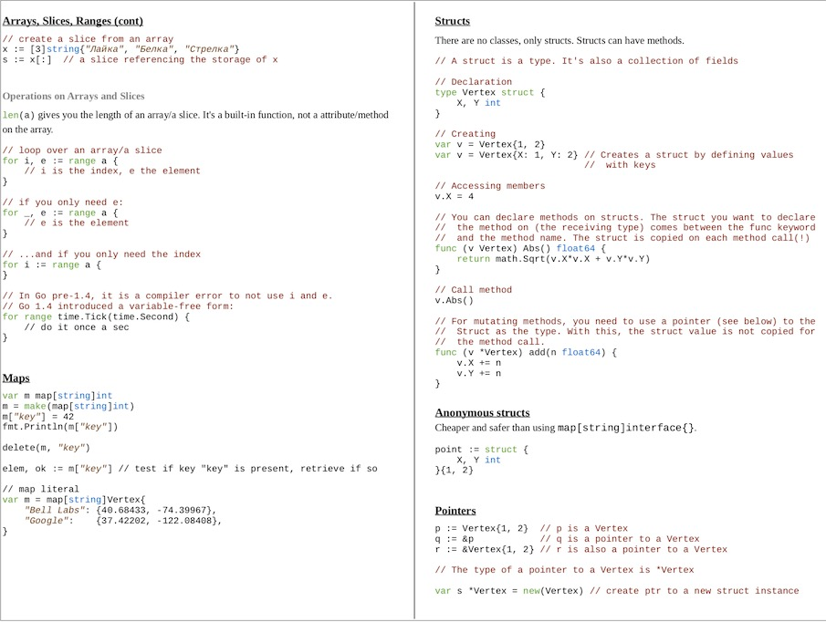 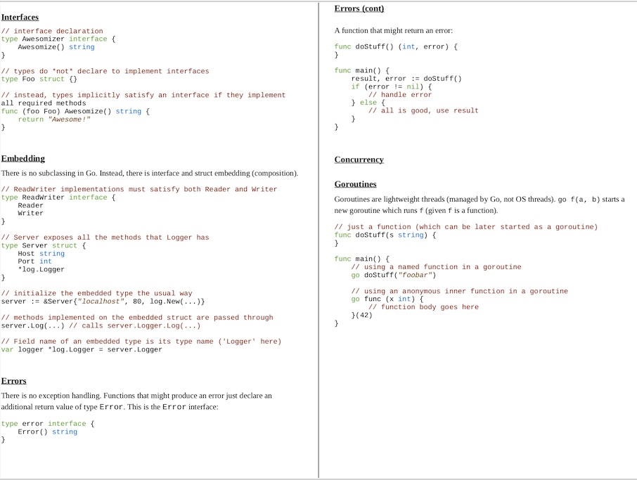 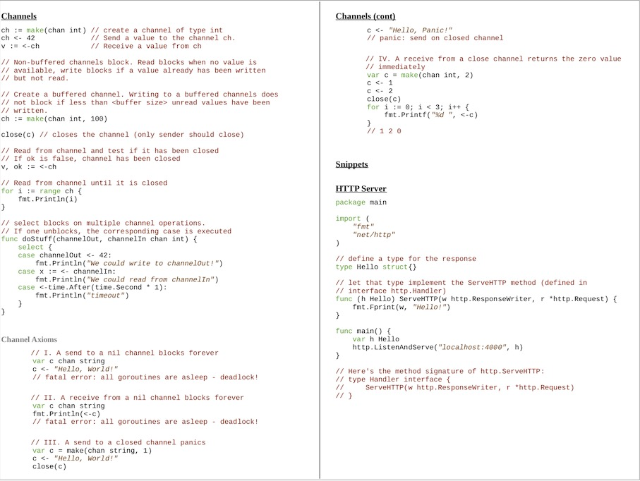
HTML的cheat sheet
HTML Cheat Sheet - A Simple Guide to HTML
HTML5 Cheat Sheet - WebsiteSetup.org
HTML5 Cheat Sheet - WebsiteSetup.org
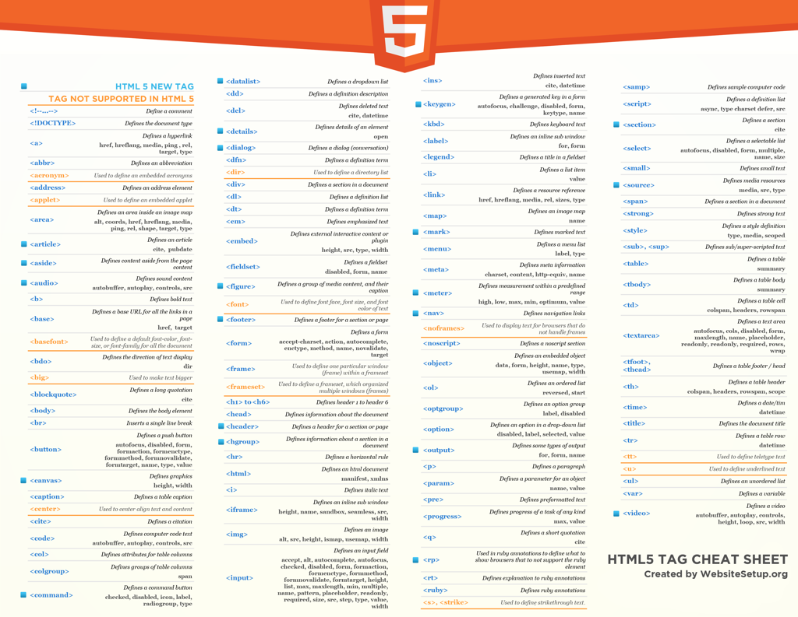
Font Awesome 的Cheatsheet
React Native折腾期间，需要利用到对应字体：fortawesome.github.io/Font-Awesome/icons/
-》
就列出了所有的字体图标
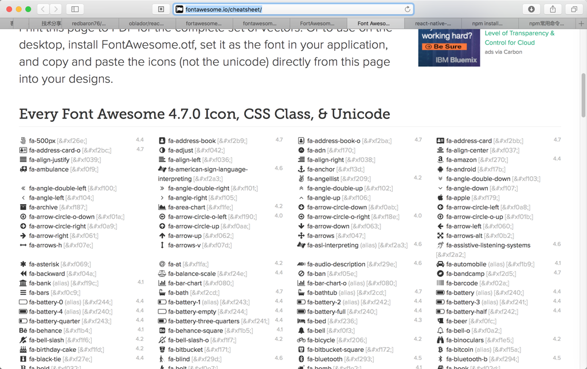
React 的cheat sheet
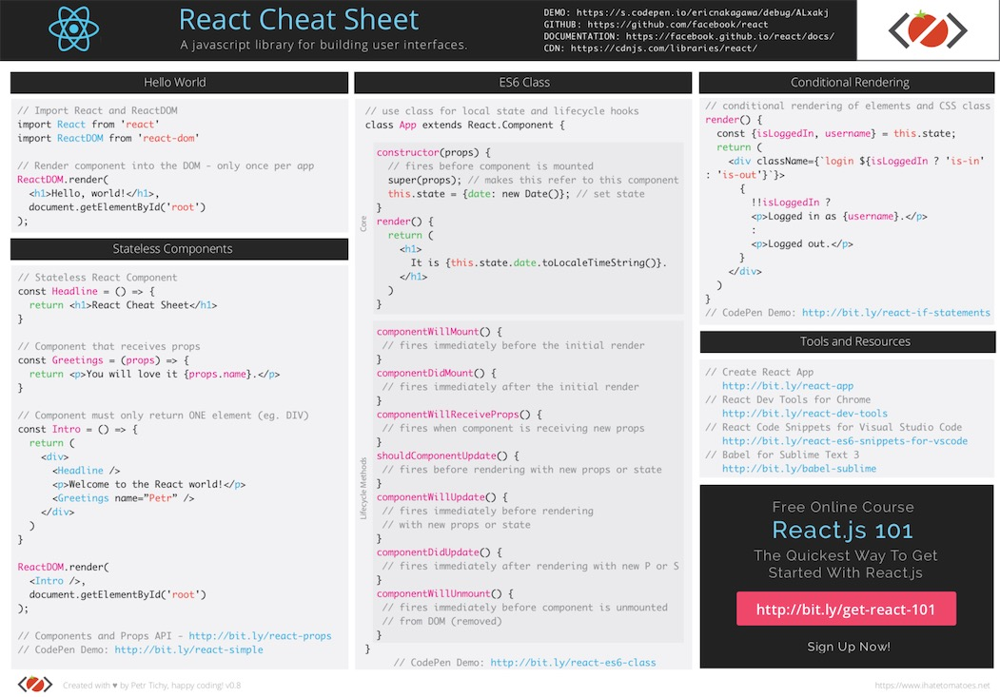
Emoji的cheat sheet
Emoji cheat sheet for GitHub, Basecamp and other services
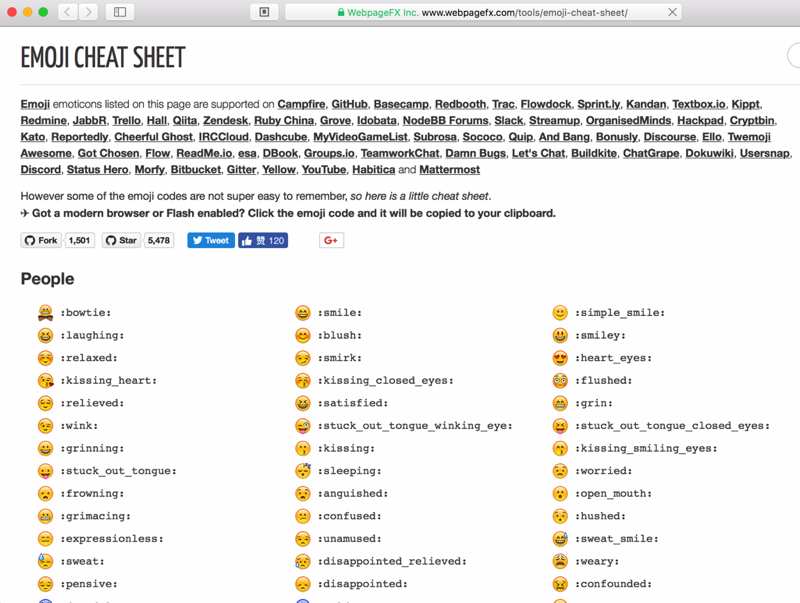
Python的Pandas的cheatsheet
Pandas Cheat Sheet for Data Science in Python (article) - DataCamp
-》
PandasPythonForDataScience.pdf
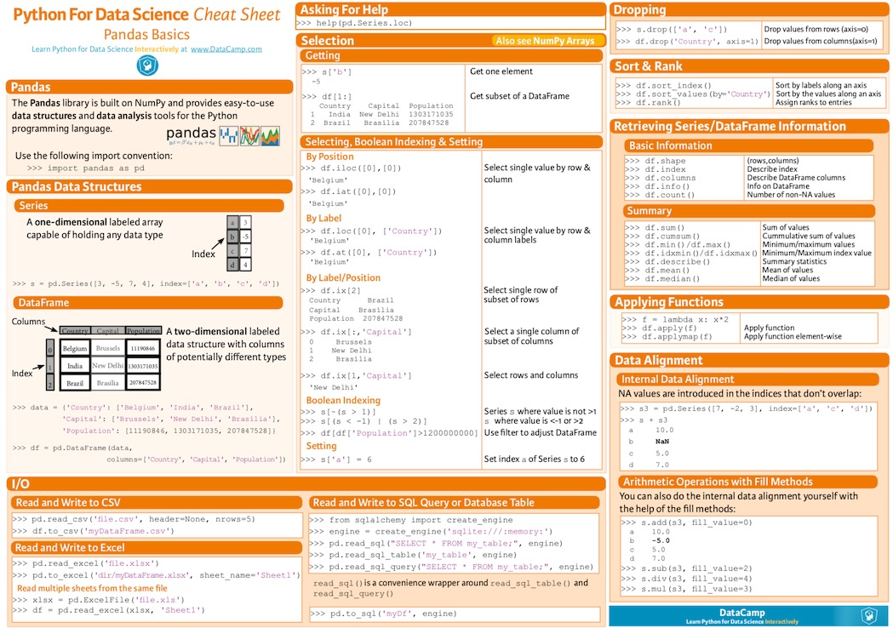
Kotlin的cheatsheet
Kotlin 作为 Android 开发语言相比传统 Java 有什么优势？ - 知乎
Kotlin Programming Language Cheat Sheet Part 1
Kotlin Programming Language Cheat Sheet Part 2
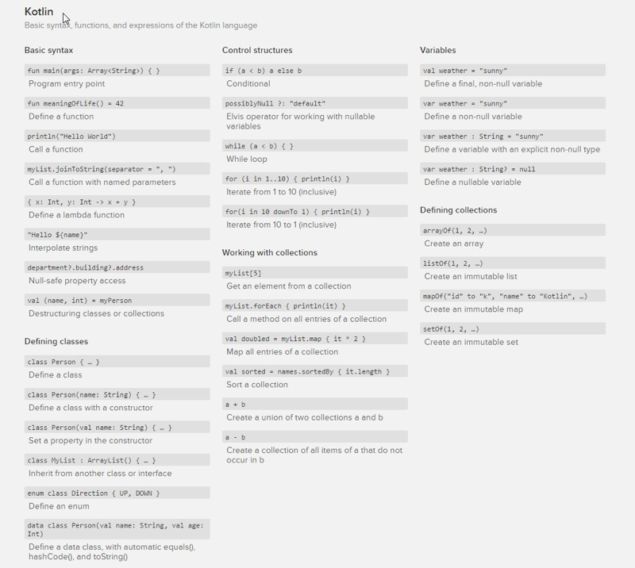